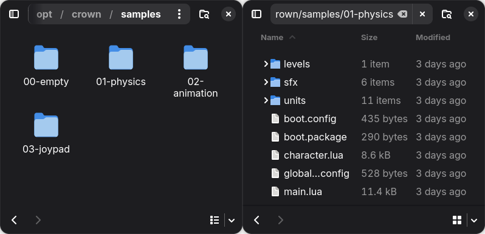
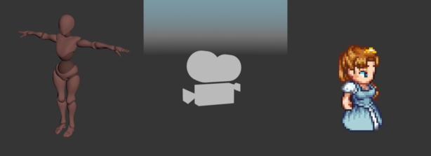

Basic Concepts¶
This page introduces the fundamental concepts and terminology used when working with Crown. Reading this section will give you a high-level understanding of the core pieces in a Crown project. It is strongly recommended to read it carefully to avoid confusion later.
Project¶
In Crown, a project is a folder that contains every resource used to describe your game. These resources are mostly plain-text files, with a few exceptions for inherently binary resources, such as textures and sounds.
Except for a few special files, resources can be arranged freely within a Crown project.
{kind=link}

Left: four sample projects. Right: resources in a project folder.¶
Resource paths and names¶
Resources are identified by their paths relative to the project root, with the
file extension omitted. Crown uses Unix-style paths with forward slashes
(/).
For example, the unit at path units/player/player.unit is identified by name
as units/player/player.
All resource paths must be canonical and normalized, strings such as
units/../units/player/player or units\\player\\player are invalid
resource names.
Unit and Components¶
Units are the fundamental building blocks in Crown. Units can be used to represent any object that exists in a game world - a character, a tree, a vehicle, a light etc.

Three example units.¶
By default, units are empty. You add functionality to a Unit by adding Components to it. No component is mandatory, units can be just empty IDs.
Crown includes a number of predefined components, some examples are:
Transform- specifies a position, rotation and scale in the worldMeshRenderer- draws a 3D meshActor- specifies physics properties for a collider, such as mass, filter etc.Script- adds logic via a Lua scriptLight,Camera,Fog,Bloometc.
Components can be added or removed at any time in the editor or at runtime.
Units support parent-child relationships, allowing you to build complex object hierarchies from smaller units. For example, a car unit might contain separate units for its body, wheels, and lights.
Unit Prefab¶
Saving a unit to disk as a .unit resource creates a prefab. Other units can reference the prefab and inherit its components and hierarchy. Changes to the prefab are automatically propagated to all of its instances.
You can create unit prefabs by saving existing units in the Level Editor or, more commonly, by importing them from scenes or sprites.
World¶
A World is the runtime container that holds Units and other objects and advances the game simulation. When a World is running it:
updates animations/audio/particles;
steps physics and handles collisions;
dispatches logic events to script components;
renders the visible scene;
etc.
You can populate a world manually through code or automatically by loading level resources into it.
A game always has at least one active world. Although uncommon, multiple worlds can run simultaneously, for example, one for the main game and another for a UI overlay.
Level¶
A .level resource represents a saved collection of units, sounds, and other objects.
You create levels in the Level Editor. A world can load multiple levels simultaneously to form complex, multi-layered scenes.